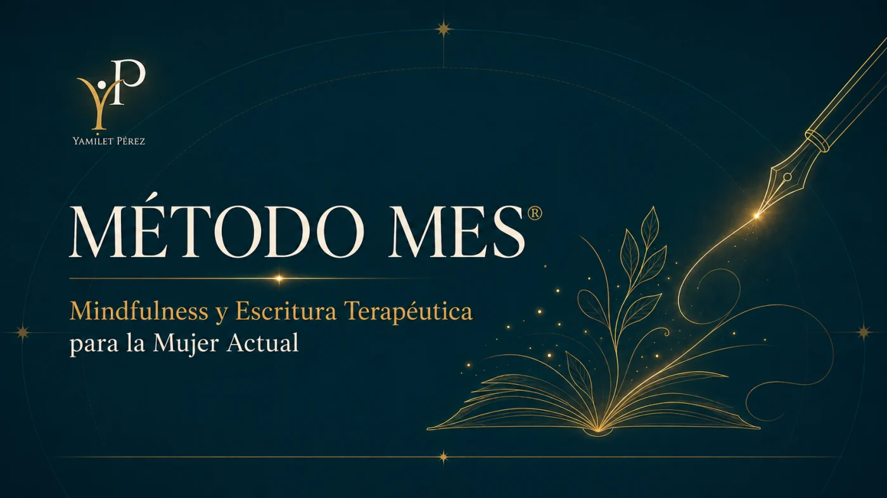
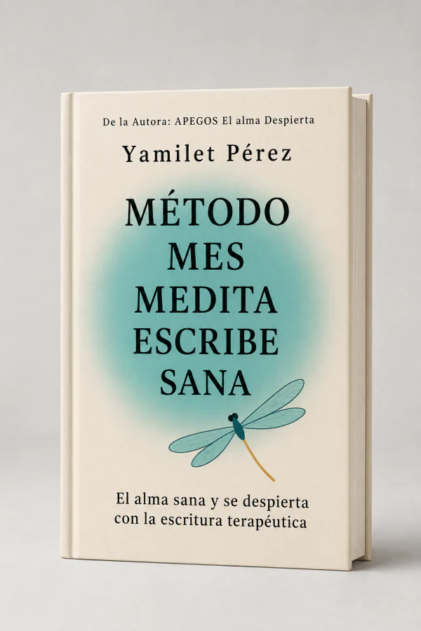
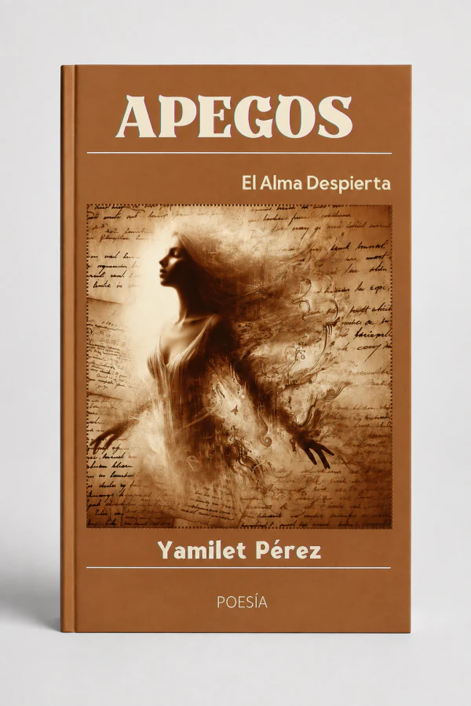
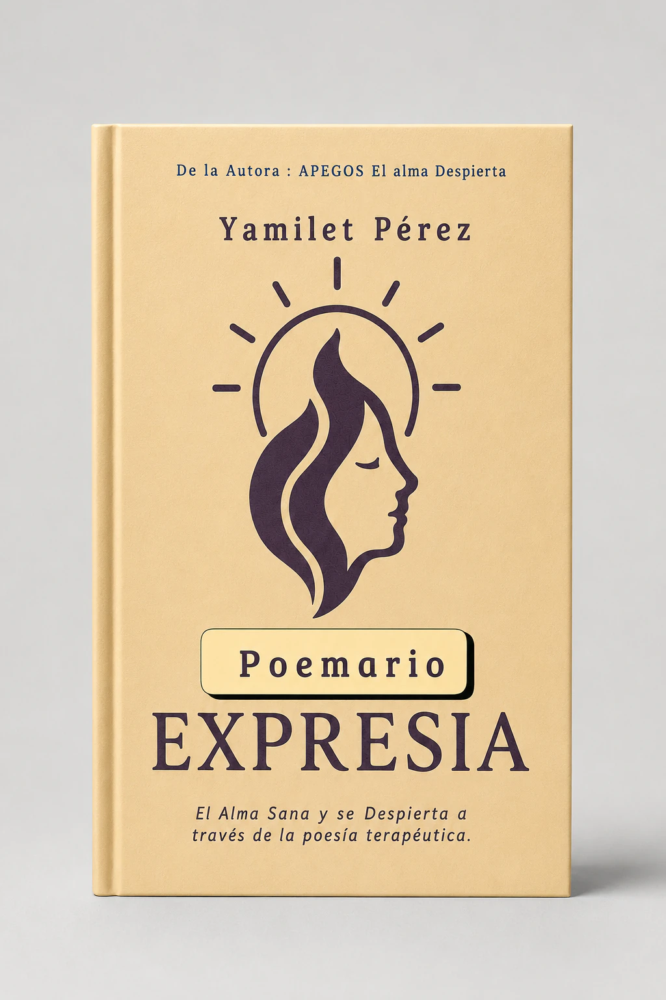
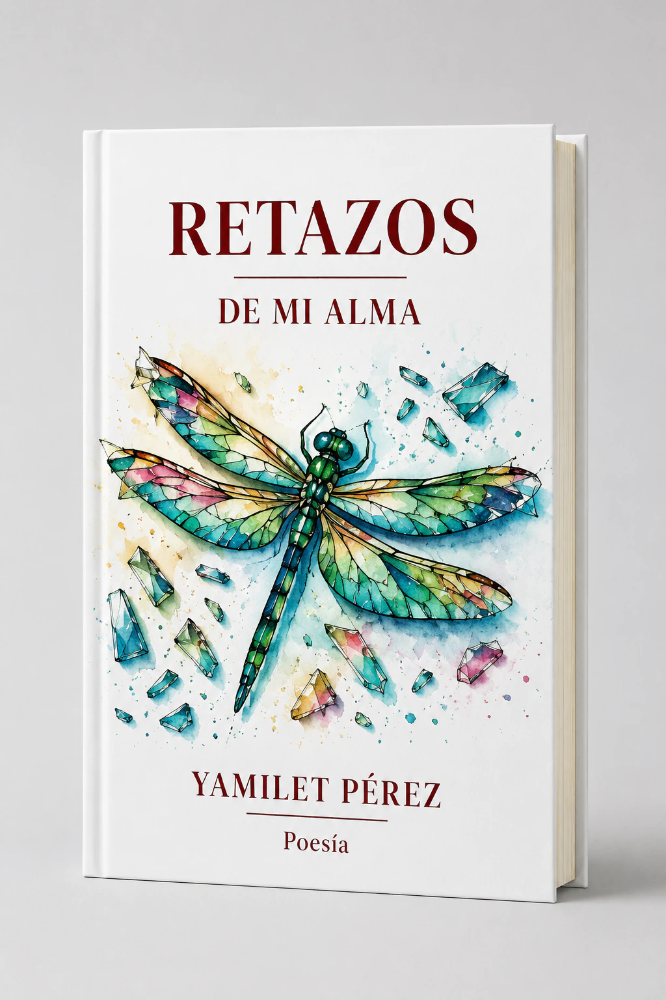
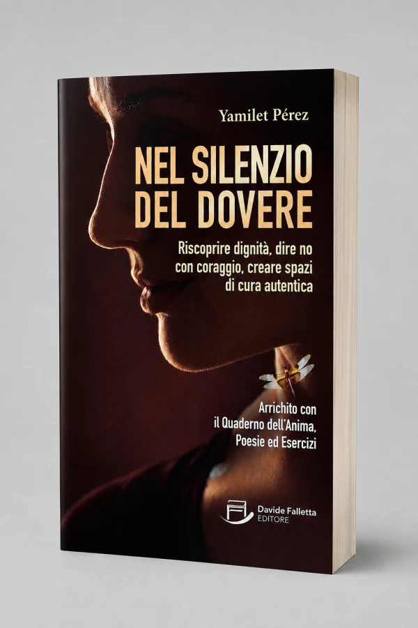

M
Medita
Fermati, torna al presente e impara a osservare ciò che accade dentro di te con maggiore chiarezza e gentilezza.
Uno spazio di trasformazione personale attraverso mindfulness, scrittura consapevole e creatività. Impara ad ascoltarti, esprimerti e trasformare la tua storia in uno strumento di crescita.
Un'esperienza pensata per accompagnarti con i tuoi tempi, profondità e chiarezza.
MES integra tre pratiche che si completano per creare un percorso personale di osservazione, espressione e integrazione.
Fermati, torna al presente e impara a osservare ciò che accade dentro di te con maggiore chiarezza e gentilezza.
Trasforma pensieri, ricordi ed emozioni in parole per dare loro ordine, significato e una nuova prospettiva.
Integra ciò che hai imparato e crea spazio per nuove scelte, abitudini e modi di relazionarti con te stessa e con la tua storia.
Un'introduzione pratica per sperimentare mindfulness, scrittura e riflessione personale prima di scegliere un percorso.
Voglio ricevere la lezioneL'accademia sarà il punto d'incontro per corsi, laboratori, masterclass e programmi guidati.

Percorsi strutturati con lezioni, esercizi e materiali di supporto.
Scopri i corsi →Incontri dedicati alla scrittura, creatività, presenza e trasformazione personale.
Vedi i laboratori →Sessioni speciali per lavorare su strumenti specifici in modo chiaro e pratico.
Vedi le masterclass →Questo spazio è già predisposto per inserire copertine ufficiali, descrizioni e link di acquisto di ogni opera.

Medita, Scrivi, Guarisci. Scrittura terapeutica e trasformazione personale.
Scopri il libro →
El Alma Despierta. Un'opera legata ai processi emotivi e alla poesia.
Scopri il libro →
Raccolta poetica di scrittura terapeutica ed espressione emotiva.
Scopri il libro →
Poesia, sensibilità e frammenti di una ricerca interiore.
Scopri il libro →Poesia che esplora memoria, radici e processi di riconciliazione.
Scopri il libro →
Un percorso su dignità, confini e spazi di cura autentica.
Scopri il libro →Yamilet Pérez è autrice, educatrice e creatrice del Metodo MES. La sua proposta unisce scrittura, mindfulness e creatività per accompagnare percorsi di conoscenza di sé e crescita personale con uno sguardo vicino, sensibile e pratico.
Il suo universo integra libri, esperienze educative e strumenti che invitano a fermarsi, ascoltare ciò che accade dentro di sé ed esprimerlo con maggiore libertà.
Articoli su scrittura consapevole, mindfulness, creatività, emozioni e vita interiore.
Uno spazio editoriale per esercizi, riflessioni e risorse di scrittura.
Pratiche semplici per coltivare presenza e attenzione nella vita di ogni giorno.
Idee per esplorare la creatività come forma di espressione e conoscenza personale.
La struttura è pronta per inserire testimonianze reali, senza inventare opinioni o risultati.